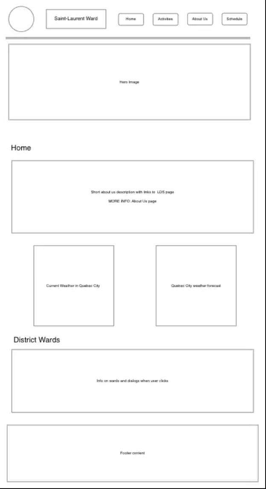
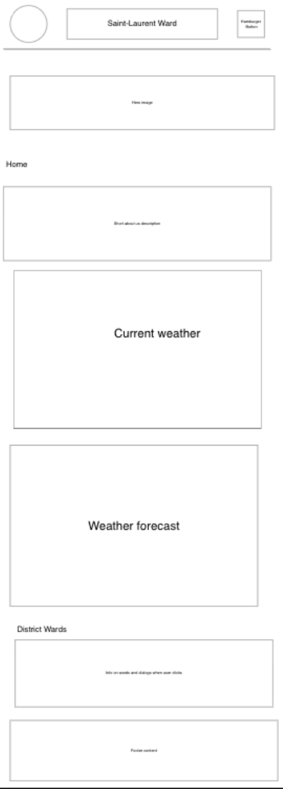

I chose this name because my project will be about the LDS ward I attend to. In quebec city, there is only one ward in spanish and I figured I could do a page containing all the ward information like activities, past events, sacrament meetings schedule, etc.
My page will be a 4 page site containing an index which will be a presenation of the ward, presenting a "About Us" section. It will also contain real weather information from quebec city and a call to visit the upcoming events and activities page. In the "Schedule" page, there will be information displaying the day and time of all the sacrament meetings from all the other wards, and their location (this information will be displayed using a json file).
There will also be a section in the index that is the scripture of the day. Using json file and getting random scriptures each day!
There will also be a section where all the ward's groups are going to be displayed and using a dialog, the user will click on the name and additional information will be displayed with a photo
These questions will be answered thanks to a dialog where the user will be able to click on an "Answer" button or similar and get a dialog with the response.
The font family used for the site will be: Trebuchet MS', 'Lucida Sans Unicode', 'Lucida Grande', 'Lucida Sans', Arial, sans-serif
It is already being applied to the whole page
Desktop Wireframe

Phone Wireframe
